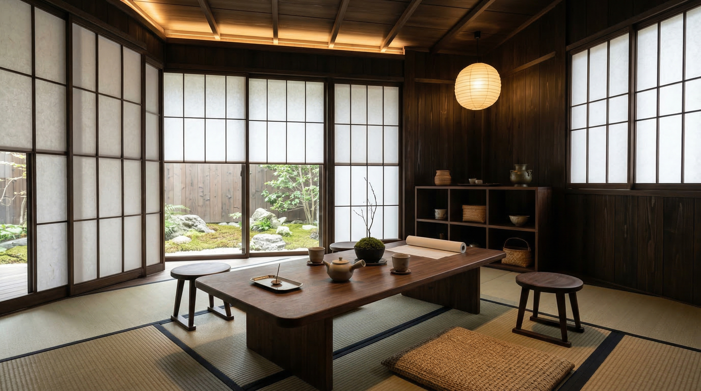

Contact
和モダンのサイト制作を、相談しやすい入口から始める。
旅館、茶寮、工芸ブランド、文化施設の予約導線や商品相談を整理したい段階から相談できます。初回は、必要なページ、写真、問い合わせ項目、公開までの優先順位を確認します。
Response
1-2営業日
Format
オンラインで制作範囲を確認。
Focus
予約・来店・商品相談を整理。
Conversation Flow
01 Scope
予約、来店、商品相談のどれを優先するかを確認します。
02 Assets
写真、価格帯、アクセス、掲載できる実績を整理します。
03 Next Step
初回返信では、ページ構成と打ち合わせ候補をご案内します。
Typical Requests
- 旅館や茶寮の予約導線を分かりやすくしたい。
- 工芸商品の背景と購入相談を同じ流れで伝えたい。
- 文化施設の展示、アクセス、来館前情報を整理したい。
Plan Route
Read Before Meeting
相談前に論点が揃っていなくても、その状態から始められる。

見た目の方向性、商品構成、空間演出、顧客との距離感など、複数の論点が絡んでいる段階でも問題ありません。初回では、どこから整えると全体が静かに強くなるかを一緒に見極めます。